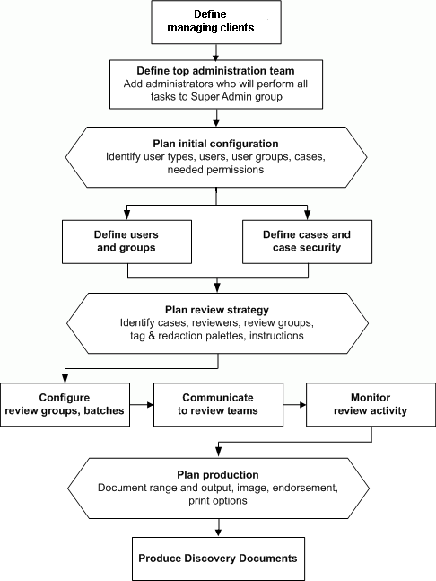

Although Eclipse offers quite a bit of flexibility as to the order of configuration activities, a typical workflow that will work for many installations is shown in the following figure. You may want to follow this workflow for a limited project (such as a single case and a few reviewers), or you may want to set up several cases, before you deploy Eclipse for reviewers and other users.
